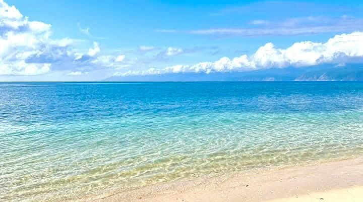
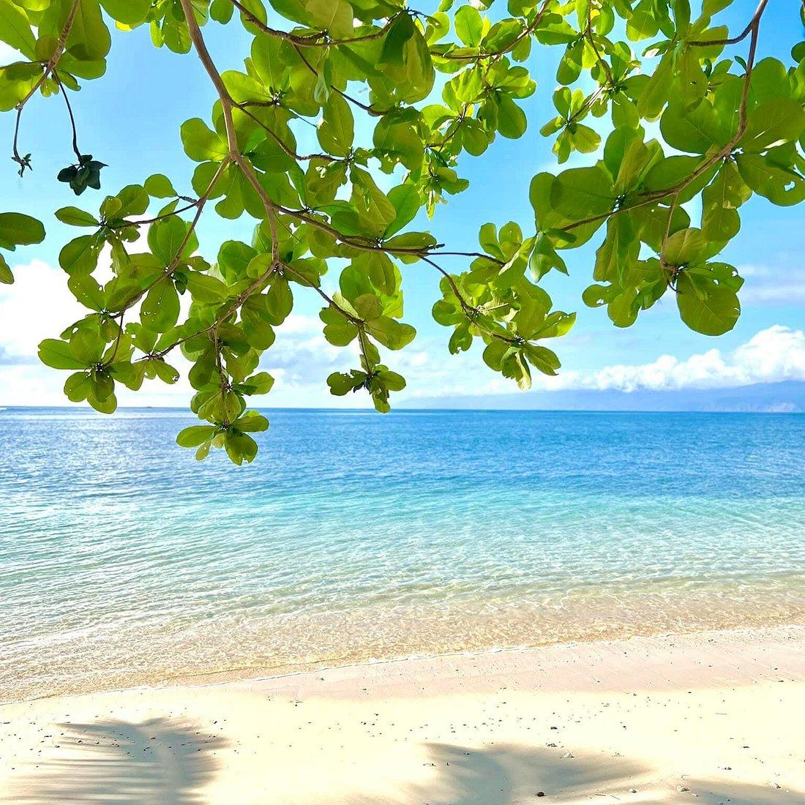

Lawigan Beach is a scenic coastal destination located in Bislig City, Surigao del Sur, for its long stretch of golden sand and strong ocean waves coming from the Pacific. Unlike typical white sand beaches, its darker, golden-brown shoreline gives it a distinctive and rugged appearance. The beach is wide and open, offering an unobstructed view of the vast ocean and horizon. Waves frequently crash along the shore, creating a dynamic and lively coastal environment. The natural setting makes it ideal for those who appreciate raw and untouched beauty.
The surrounding area is relatively undeveloped, allowing the beach to maintain its natural charm. The sound of the waves and the sea breeze contribute to a calming yet powerful atmosphere. The coastline stretches far, making it suitable for long walks and quiet reflection. The absence of heavy commercial activity adds to its peaceful ambiance. Visitors often enjoy the contrast between its strong waves and tranquil surroundings. Overall, Lawigan Beach offers a unique and less crowded coastal experience.


Lawigan Beach lies along the Pacific-facing side of Bislig, characterized by open sea views, moderate surf, and lush coastal vegetation. Its mixture of sand and rocky areas gives the shoreline a rugged yet inviting character, with tidal pools forming at low tide. The surrounding barangay of Lawigan retains a rural, fishing-community atmosphere.
The beach attracts both locals and travelers seeking a quiet retreat. Common activities include swimming, beach sports, and small-boat excursions along the coast. Nearby spots—such as Tinuy-an Falls and the Hinayagan Cave—are popular day-trip pairings, making Lawigan part of a broader Bislig ecotourism circuit.

Visitors typically reach Lawigan Beach via tricycle, motorcycle, or private vehicle from Bislig’s center. The area remains relatively undeveloped, with minimal resort infrastructure, appealing to those who prefer raw coastal landscapes. Local families occasionally offer cottages or picnic huts, emphasizing community-based tourism.